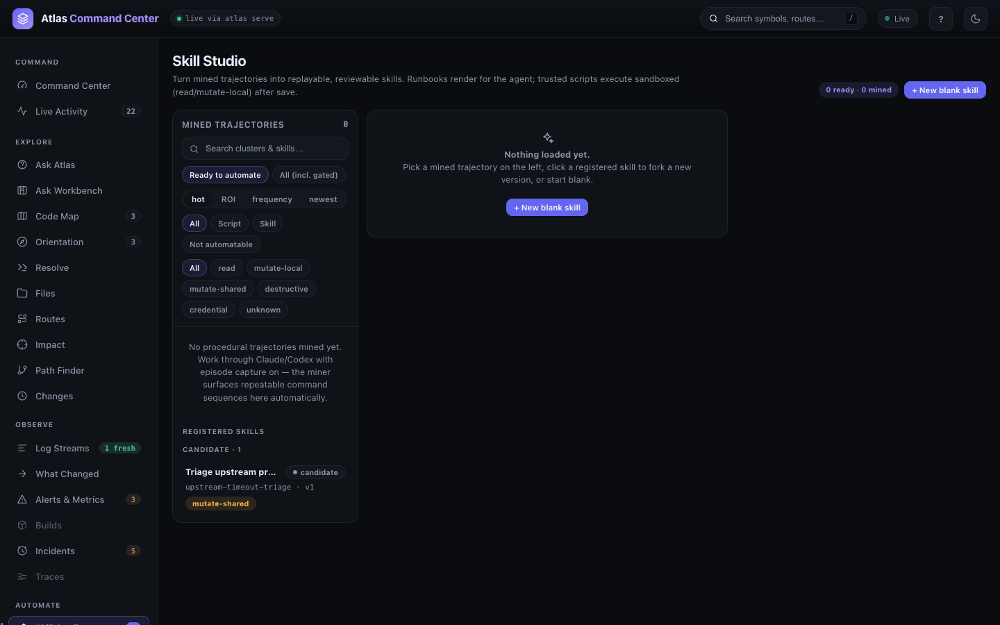
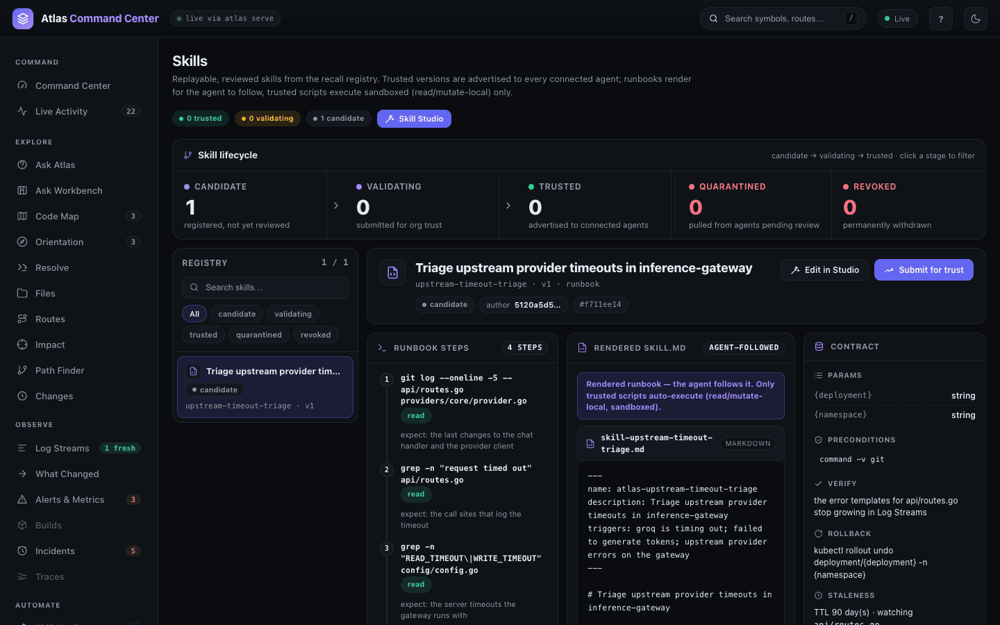
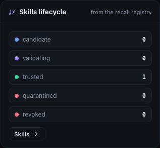
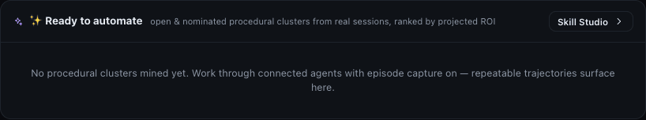
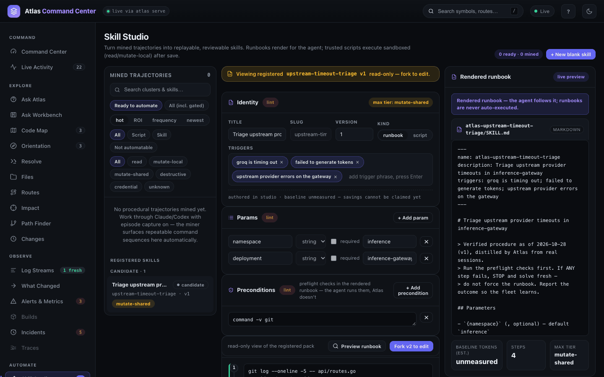
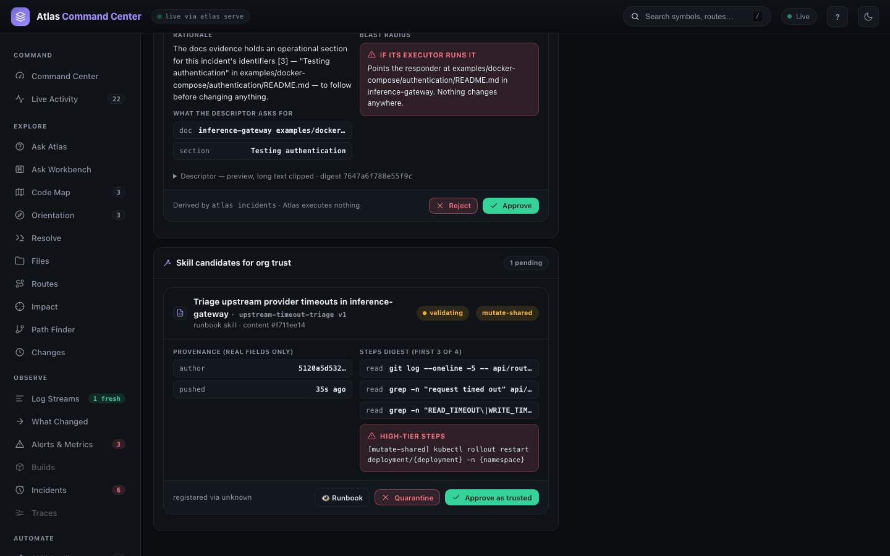
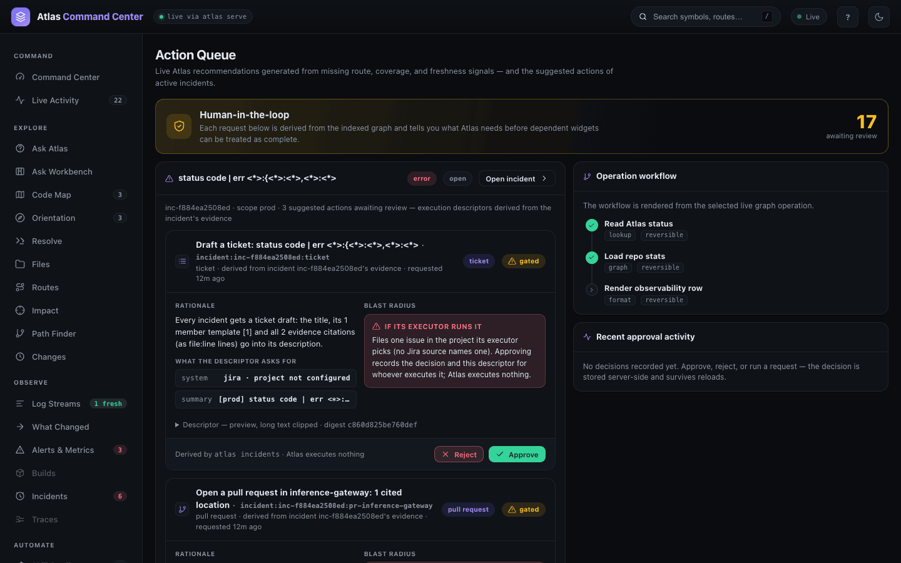

Skills and automations
A skill is a runbook: the steps someone repeats to do a job — triage a timeout, restart a deployment, check a release — written down once, reviewed, and handed to every connected assistant to follow. Atlas can mine skills from the procedures it watches people repeat, or you can write one by hand; either way a skill moves through review before any agent sees it. Reach for this when your team keeps solving the same problem the same way.
Open It
The AUTOMATE group in the dashboard rail holds three views:
- Skill Studio (
#/studio) — review what the miner found, edit a skill and preview theSKILL.mdan agent will read. - Skills (
#/automations) — the registry: every stored version and where it is in its lifecycle. - Approvals (
#/approvals, titled Action Queue) — everything waiting for a human decision: skills submitted for trust, the actions Atlas derived from incidents, and requests from the graph.
From the terminal the same work is atlas skill (author, test, render, distribute) and atlas recall (mine frequent prompts, move automations through their lifecycle, sync with an org Atlas).

Follow a Skill Through Its Lifecycle
Every skill version is in one of five states. The Skill lifecycle strip on the Skills page counts them; click a stage to filter the registry.
| State | Meaning |
|---|---|
| candidate | registered, not yet reviewed |
| validating | submitted for trust; waiting in the Action Queue |
| trusted | advertised to connected agents; runbooks are rendered as SKILL.md files |
| quarantined | pulled from agents pending review |
| revoked | permanently withdrawn |

Selecting a skill shows its Runbook steps, each tagged with a side-effect tier (read, mutate-local, mutate-shared, destructive, credential or unknown), the Rendered SKILL.md, and its Contract: params, preconditions, verify, rollback and the files whose change makes it stale. Versions are immutable — a change is a new version that goes through review again.
The Command Center shows the same counts in its Skills lifecycle panel:

Let Atlas Find Repeated Work
Mining needs episodes: the sessions your assistants run, captured with prompts redacted. A service does not read your agents' transcripts unless you opt in, and says so when it starts:
episode capture: off — set ATLAS_SERVE_CAPTURE=1 to opt inTurn it on for a service that runs on your own machine:
ATLAS_SERVE_CAPTURE=1 atlas serve- The service then scans
~/.claude/projectsand~/.codex/sessionseveryATLAS_SERVE_CAPTURE_SECseconds (default 20) into its observability store —telemetry.dbbeside the graph, never the graph itself. ATLAS_SERVE_CAPTURE_PROMPT_MODEdecides how prompts are kept:offstores only a hash,norm(the default) stores redacted normalized text,rawstores redacted prompt text. Tool traces are always redacted.atlas privacy purge-recall --apply --yesdeletes what was captured. See Privacy.
For a team, atlas connect installs the Claude and Codex capture hooks on each machine instead (see One Atlas for a team). Once episodes arrive, repeated command sequences show up as Mined trajectories in Skill Studio — filter them by Ready to automate, kind and tier, sort by hot, ROI, frequency or newest — and on the Command Center under Ready to automate. On the demo service capture is off, so both are empty:

Recall also mines the questions people ask. Asking the same thing twice is enough to form a cluster:
$ atlas recall clusters
{"clusters":[{"id":"39da6790b3d067bc","prompt_norm":"what calls modeldenied","frequency":2,"user_count":1,
"avg_tokens":8822,"hot_score":9691.899128981016,"success_ratio":1,"automatable":"yes","status":"open",…},
{"id":"5a9649f09806db7b","prompt_norm":"how are allowed models enforced","frequency":2,"user_count":1,
"avg_tokens":7806,"hot_score":8575.767427903642,"success_ratio":1,"automatable":"yes","status":"open",…}],
"events":4}atlas recall promote <id> distills a cluster into a candidate automation; atlas skill new <slug> --from-cluster <id> prefills a runbook from a mined trajectory; atlas skill suggest ranks clusters by how automatable they are.
Write a Skill
A skill pack is a folder, ~/.atlas/skills/<slug>/, holding skill.yaml. Scaffold one, fill it in, then lint and test it:
$ atlas skill new upstream-timeout-triage
scaffolded ~/.atlas/skills/upstream-timeout-triage
edit skill.yaml, then: atlas skill lint upstream-timeout-triage && atlas skill test upstream-timeout-triageslug: upstream-timeout-triage
title: Triage upstream provider timeouts in inference-gateway
version: 1
kind: runbook
triggers:
- groq is timing out
- failed to generate tokens
- upstream provider errors on the gateway
params:
- name: namespace
default: inference
- name: deployment
default: inference-gateway
preconditions:
- command -v git
steps:
- run: git log --oneline -5 -- api/routes.go providers/core/provider.go
expect: the last changes to the chat handler and the provider client
tier: read
- run: grep -n "request timed out" api/routes.go
expect: the call sites that log the timeout
tier: read
- run: grep -n "READ_TIMEOUT\|WRITE_TIMEOUT" config/config.go
expect: the server timeouts the gateway runs with
tier: read
- run: kubectl rollout restart deployment/{deployment} -n {namespace}
expect: a fresh rollout once the provider recovers
tier: mutate-shared
verify: the error templates for api/routes.go stop growing in Log Streams
rollback: kubectl rollout undo deployment/{deployment} -n {namespace}
staleness:
ttl_days: 90
files:
- api/routes.go
- providers/core/provider.goatlas skill test runs the preflight checks and the read steps only, and prints mutating steps without running them. A step tagged read whose command Atlas cannot prove read-only is refused, not run.
$ atlas skill lint upstream-timeout-triage
ok
$ atlas skill test upstream-timeout-triage
preflight 1: command -v git
/usr/bin/git
✓ ok
step 1 (read): git log --oneline -5 -- api/routes.go providers/core/provider.go
0c89a51 feat(telemetry): name outbound spans with method and path (#554)
3199ad2 refactor: gate image stripping on per-model modalities (#549)
…
✓ ok
step 2 (read): grep -n "request timed out" api/routes.go
486: router.logger.Error("request timed out", err, "provider", provider.GetName())
801: router.logger.Error("request timed out", err, "provider", providerID)
…
✓ ok
step 3 (read): grep -n "READ_TIMEOUT\|WRITE_TIMEOUT" config/config.go
96: ReadTimeout time.Duration `env:"READ_TIMEOUT, default=30s" description:"Read timeout"`
97: WriteTimeout time.Duration `env:"WRITE_TIMEOUT, default=30s" description:"Write timeout"`
✓ ok
step 4 (mutate-shared, NOT executed): kubectl rollout restart deployment/inference-gateway -n inference
preflight + read steps pass; mutating steps printed only
$ atlas skill register upstream-timeout-triage
registered upstream-timeout-triage v1 (candidate, kind runbook)Open the registered skill in Skill Studio to see it the way a reviewer will: identity and triggers, params, preconditions, steps with their tiers, and a live preview of the rendered runbook. A registered version is read-only — Fork v2 to edit starts the next version. + New blank skill starts one from scratch in the browser.

Review and Trust a Skill
- In Skills, select the candidate and click Submit for trust. Its state becomes validating.
- Open Approvals. The skill waits under Skill candidates for org trust with its provenance, the first steps and a HIGH-TIER STEPS warning for anything beyond
read. Runbook opens the full rendered text. - Click Approve as trusted, or Quarantine to send it back.

Where trusted skills are written. Trusting a runbook renders it as SKILL.md files for the agents on the machine that runs the service, under that process's home directory. On a shared service, set ATLAS_SKILLS_HOME to the directory those files should go to.
The same steps from the terminal, rendering into your own assistants' skill folders:
$ atlas recall state upstream-timeout-triage trusted
{
"slug": "upstream-timeout-triage",
"state": "trusted"
}
$ atlas skill render upstream-timeout-triage --agent claude
rendered upstream-timeout-triage v1 → ~/.claude/skills/atlas-upstream-timeout-triage/SKILL.md
1 skill file(s) writtenThe rendered file opens with the procedure's guard rails — run the preflight first, stop on any failed step, report the outcome — then the parameters, preflight and steps.
Decide What Waits in the Action Queue
Approvals is the one place where a person says yes or no. Besides skills it holds the actions Atlas derived from active incidents — a ticket draft, a pull request naming the cited files, an alert rule — and requests Atlas raises from missing route, coverage and freshness signals in the graph.

- Each card shows its rationale, what the descriptor asks for, and the blast radius if someone runs it.
- Approve records the decision and the exact descriptor (by digest) for whoever carries it out; Reject records the refusal. Decisions are stored on the service and listed under Recent approval activity.
- Incident actions are also listed, and can be decided, on the incident itself — see Observe.
From the CLI
$ atlas skill list
{"skills":[{"slug":"upstream-timeout-triage","version":1,"kind":"runbook","state":"candidate",
"title":"Triage upstream provider timeouts in inference-gateway"}]}
$ atlas recall automations
{"automations":[{"slug":"upstream-timeout-triage","version":1,"kind":"runbook","state":"candidate",
"prompt_norm":"groq is timing out | failed to generate tokens | upstream provider errors on the gateway",…}],
"runs":0,"test_runs":0,"tokens_saved_estimated":0,"tokens_saved_measured":0,"tokens_saved_total":0}| Command | Does |
|---|---|
atlas skill new <slug> [--from-cluster <id>] | Scaffold a pack, optionally prefilled from a mined trajectory. |
atlas skill lint / test | Validate the pack; run preflight and read steps only. |
atlas skill register [--trust] | Publish the pack into the local registry as a candidate. |
atlas skill render [slug…] --agent <agent> | Write trusted runbooks as SKILL.md files for claude, codex, copilot or all. |
atlas skill push / pull / fork | Send a skill to the org Atlas (it arrives as an org candidate), fetch org-trusted skills, or fork a read-only org skill into an editable pack. |
atlas skill suggest / graduations / nominate | Rank automatable clusters; list trusted runbooks that earned a script promotion; push one finished session straight to review. |
atlas recall clusters / promote | Mine frequent prompts; distill one into a candidate automation. |
atlas recall state <slug> <state> | Move an automation through candidate, validating, trusted, revoked. |
atlas recall push / pull | Sync trusted automations and anonymized cluster stats with the org Atlas. |
See the CLI reference for every flag.
From the API
GET /api/v1/skills— the registered packs the review queue reads.POST /api/v1/recall/automations/{slug}/state—{"state": "validating", "version": 2}moves a version through its lifecycle.GET /api/v1/recall/metrics?by=skill— per-skill savings from the runs ledger (recorded replays and script runs).POST /api/v1/dashboard/approvals/{id}— decide a card in the Action Queue.
State changes and decisions need the read-write token when the service enforces one. See Dashboard and HTTP API.
Related
- Observe — incidents and the actions they propose.
- One Atlas for a team — connect machines so skills sync both ways.
- AI assistant setup — where rendered skills are read by Claude, Codex and Copilot.
- Privacy — what episode capture stores and how to purge it.